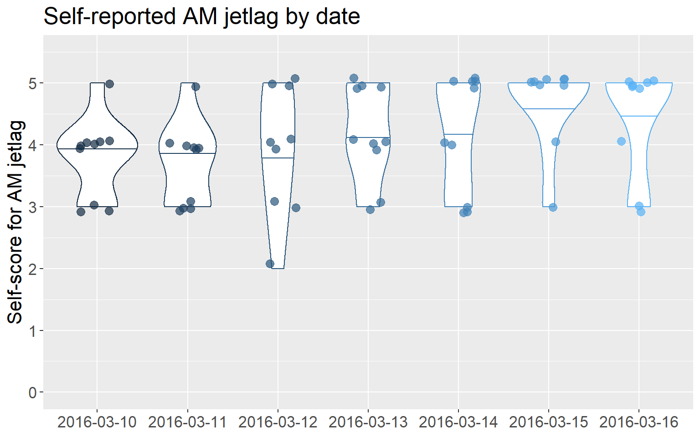
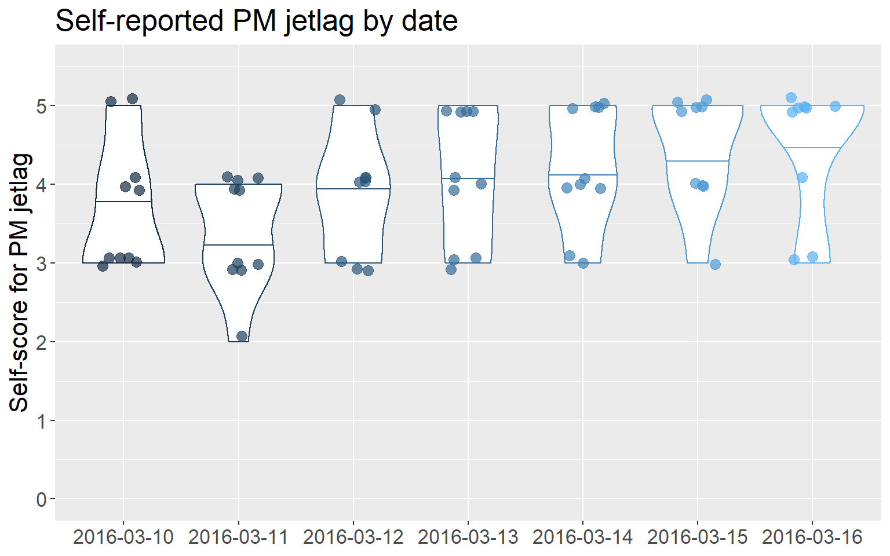
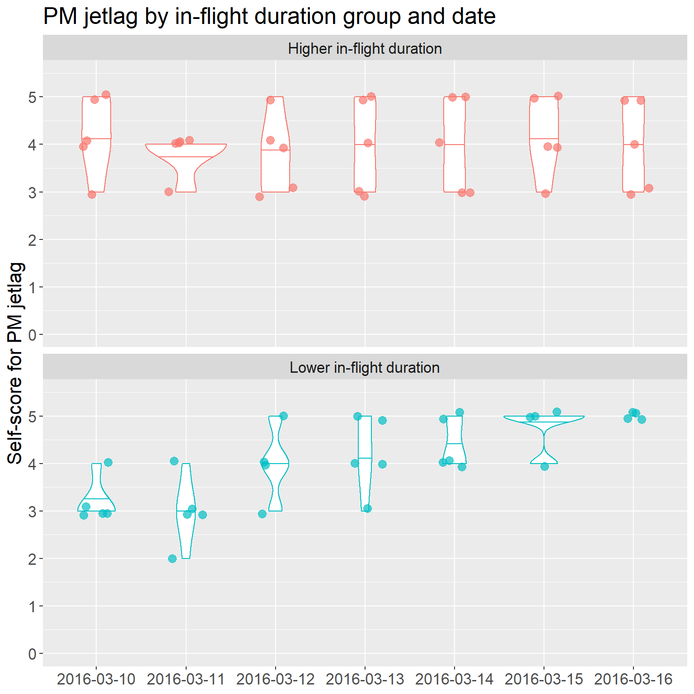
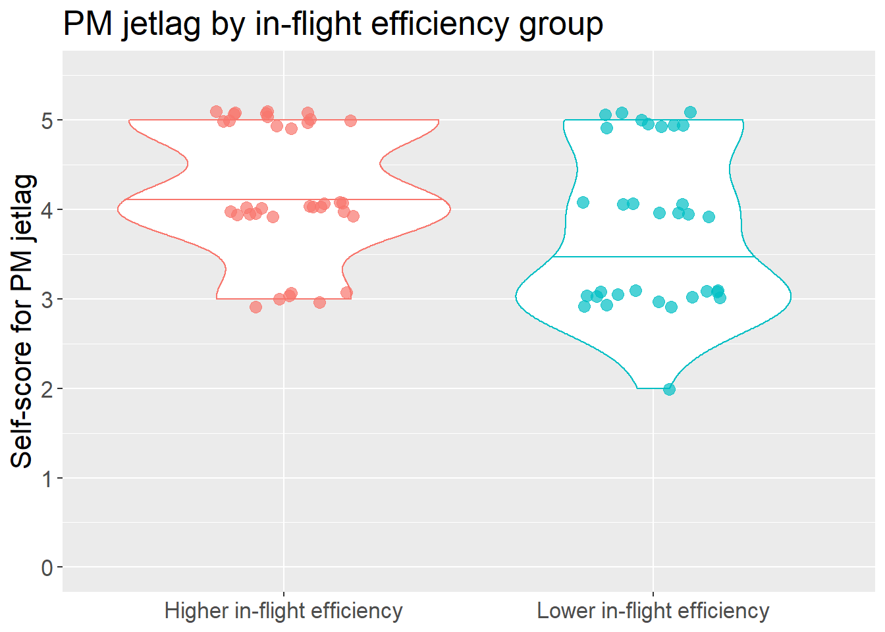

Chapter 12 Impact of flight on jetlag
12.1 Omnibus models: Based on in-flight duration group
| Test effect | Statistic | df | p | Sig. difference? |
|---|---|---|---|---|
| AM jetlag | ||||
| Main effect: In-flight duration group | 0.3579 | 1.0000 | 0.5497 | No |
| Main effect: Date | 4.6602 | 3.2735 | 0.0021 | Yes |
| Interaction: Group x Date | 3.0758 | 3.2735 | 0.0227 | Yes |
| PM jetlag | ||||
| Main effect: In-flight duration group | 0.0775 | 1.0000 | 0.7807 | No |
| Main effect: Date | 4.8525 | 2.9489 | 0.0024 | Yes |
| Interaction: Group x Date | 3.8401 | 2.9489 | 0.0096 | Yes |
12.1.1 Pairwise tests for AM jetlag
12.1.1.1 Main effect of date
Perceived jetlag data was recorded from 2016-03-10 to 2016-03-16, inclusive. To test all pairs of dates requires 21 pairwise comparisons, so the Bonferroni-adjusted p value = 0.05 / 21 = 0.00238.
| Tested pair | p | p_bonferroni | Pairwise difference? |
|---|---|---|---|
| subset_march_10_vs_15 | 0.00057 | 0.00238 | Yes |
| subset_march_11_vs_15 | 0.00000 | 0.00238 | Yes |
| subset_march_11_vs_16 | 0.00003 | 0.00238 | Yes |
| subset_march_12_vs_15 | 0.00182 | 0.00238 | Yes |
| subset_march_10_vs_11 | 0.74177 | 0.00238 | No |
| subset_march_10_vs_12 | 0.71070 | 0.00238 | No |
| subset_march_10_vs_13 | 0.17007 | 0.00238 | No |
| subset_march_10_vs_14 | 0.17007 | 0.00238 | No |
| subset_march_10_vs_16 | 0.01349 | 0.00238 | No |
| subset_march_11_vs_12 | 0.58509 | 0.00238 | No |
| subset_march_11_vs_13 | 0.06986 | 0.00238 | No |
| subset_march_11_vs_14 | 0.11344 | 0.00238 | No |
| subset_march_12_vs_13 | 0.36605 | 0.00238 | No |
| subset_march_12_vs_14 | 0.14179 | 0.00238 | No |
| subset_march_12_vs_16 | 0.01448 | 0.00238 | No |
| subset_march_13_vs_14 | 0.82974 | 0.00238 | No |
| subset_march_13_vs_15 | 0.00443 | 0.00238 | No |
| subset_march_13_vs_16 | 0.01431 | 0.00238 | No |
| subset_march_14_vs_15 | 0.03622 | 0.00238 | No |
| subset_march_14_vs_16 | 0.05709 | 0.00238 | No |
| subset_march_15_vs_16 | 0.17007 | 0.00238 | No |
12.1.1.2 Summary stats: AM jetlag by date
| date | median | IQR |
|---|---|---|
| 2016-03-10 | 4 | 1 |
| 2016-03-11 | 4 | 1 |
| 2016-03-12 | 4 | 2 |
| 2016-03-13 | 4 | 1 |
| 2016-03-14 | 4 | 2 |
| 2016-03-15 | 5 | 0 |
| 2016-03-16 | 5 | 1 |

12.1.1.3 Interaction effect of group x date
From the omnibus model, the interaction effect of group x date indicates that there are differences between the in-flight duration groups in terms of their AM jetlag time profiles. More specifically, the groups differ in the way that AM jetlag changes between time points.
Perceived jetlag data was recorded from 2016-03-10 to 2016-03-16, inclusive. There are two levels within the factor inflight_duration_group. To conduct pairwise comparisons of an interaction effect, we need to create subsets that allow us to compare the two in-flight duration groups on each pair of dates. In other words, we create one subset per pair of dates (i.e., 21 possible date-pairs, so 21 subsets). We run 1 comparison test for each subset (i.e., 21 comparison tests), where we are comparing the higher vs. lower in-flight duration groups in terms of their change from one date to another. For this part of the analysis, the Bonferroni-adjusted p value = 0.05 / 21 = 0.00238.
| Tested date-pairs | p | p_bonferroni | Pairwise difference? |
|---|---|---|---|
| subset_march_11_vs_15 | 0.00058 | 0.00238 | Yes |
| subset_march_11_vs_16 | 0.00005 | 0.00238 | Yes |
| subset_march_10_vs_11 | 0.88357 | 0.00238 | No |
| subset_march_10_vs_12 | 0.92272 | 0.00238 | No |
| subset_march_10_vs_13 | 0.17007 | 0.00238 | No |
| subset_march_10_vs_14 | 0.03959 | 0.00238 | No |
| subset_march_10_vs_15 | 0.10963 | 0.00238 | No |
| subset_march_10_vs_16 | 0.02354 | 0.00238 | No |
| subset_march_11_vs_12 | 0.73103 | 0.00238 | No |
| subset_march_11_vs_13 | 0.06244 | 0.00238 | No |
| subset_march_11_vs_14 | 0.02131 | 0.00238 | No |
| subset_march_12_vs_13 | 0.21392 | 0.00238 | No |
| subset_march_12_vs_14 | 0.00719 | 0.00238 | No |
| subset_march_12_vs_15 | 0.06540 | 0.00238 | No |
| subset_march_12_vs_16 | 0.00762 | 0.00238 | No |
| subset_march_13_vs_14 | 0.16218 | 0.00238 | No |
| subset_march_13_vs_15 | 0.34278 | 0.00238 | No |
| subset_march_13_vs_16 | 0.01431 | 0.00238 | No |
| subset_march_14_vs_15 | 0.97168 | 0.00238 | No |
| subset_march_14_vs_16 | 0.29050 | 0.00238 | No |
| subset_march_15_vs_16 | 0.17007 | 0.00238 | No |
12.1.1.4 Summary stats: AM jetlag by group and date
| subset_id | higher_duration_group_change | lower_duration_group_change |
|---|---|---|
| subset_march_10_vs_11 | 0 ± 0 | 0 ± 2 |
| subset_march_10_vs_12 | 0 ± 1 | 0 ± 1 |
| subset_march_10_vs_13 | 0 ± 2 | -1 ± 1 |
| subset_march_10_vs_14 | 1 ± 2 | -1 ± 0 |
| subset_march_10_vs_15 | -1 ± 1 | -2 ± 0 |
| subset_march_10_vs_16 | 0 ± 2 | -2 ± 0 |
| subset_march_11_vs_12 | 0 ± 0 | 0 ± 2 |
| subset_march_11_vs_13 | 0 ± 0 | -1 ± 2 |
| subset_march_11_vs_14 | 0 ± 1 | -2 ± 2 |
| subset_march_11_vs_15 | 0 ± 1 | -2 ± 1 |
| subset_march_11_vs_16 | 0 ± 0 | -2 ± 1 |
| subset_march_12_vs_13 | 0 ± 0 | -1 ± 0 |
| subset_march_12_vs_14 | 0 ± 1 | -1 ± 0 |
| subset_march_12_vs_15 | 0 ± 1 | -2 ± 1 |
| subset_march_12_vs_16 | 0 ± 0 | -2 ± 1 |
| subset_march_13_vs_14 | 0 ± 0 | 0 ± 0 |
| subset_march_13_vs_15 | 0 ± 1 | -1 ± 0 |
| subset_march_13_vs_16 | 0 ± 0 | -1 ± 0 |
| subset_march_14_vs_15 | 0 ± 1 | 0 ± 1 |
| subset_march_14_vs_16 | 0 ± 0 | 0 ± 1 |
| subset_march_15_vs_16 | 0 ± 1 | 0 ± 0 |

12.1.2 Pairwise tests for PM jetlag
12.1.2.1 Main effect of date
Perceived jetlag data was recorded from 2016-03-10 to 2016-03-16, inclusive. To test all pairs of dates requires 21 pairwise comparisons, so the Bonferroni-adjusted p value = 0.05 / 21 = 0.00238.
| Tested pair | p | p_bonferroni | Pairwise difference? |
|---|---|---|---|
| subset_march_11_vs_14 | 0.00042 | 0.00238 | Yes |
| subset_march_11_vs_15 | 0.00000 | 0.00238 | Yes |
| subset_march_11_vs_16 | 0.00000 | 0.00238 | Yes |
| subset_march_10_vs_11 | 0.05778 | 0.00238 | No |
| subset_march_10_vs_12 | 0.33465 | 0.00238 | No |
| subset_march_10_vs_13 | 0.21542 | 0.00238 | No |
| subset_march_10_vs_14 | 0.09636 | 0.00238 | No |
| subset_march_10_vs_15 | 0.00389 | 0.00238 | No |
| subset_march_10_vs_16 | 0.00967 | 0.00238 | No |
| subset_march_11_vs_12 | 0.05489 | 0.00238 | No |
| subset_march_11_vs_13 | 0.02212 | 0.00238 | No |
| subset_march_12_vs_13 | 0.53383 | 0.00238 | No |
| subset_march_12_vs_14 | 0.29042 | 0.00238 | No |
| subset_march_12_vs_15 | 0.06047 | 0.00238 | No |
| subset_march_12_vs_16 | 0.03944 | 0.00238 | No |
| subset_march_13_vs_14 | 0.72419 | 0.00238 | No |
| subset_march_13_vs_15 | 0.21873 | 0.00238 | No |
| subset_march_13_vs_16 | 0.02270 | 0.00238 | No |
| subset_march_14_vs_15 | 0.14228 | 0.00238 | No |
| subset_march_14_vs_16 | 0.01431 | 0.00238 | No |
| subset_march_15_vs_16 | 0.55715 | 0.00238 | No |
12.1.2.2 Summary stats: PM jetlag by date
| date | median | IQR |
|---|---|---|
| 2016-03-10 | 4 | 1 |
| 2016-03-11 | 4 | 1 |
| 2016-03-12 | 4 | 1 |
| 2016-03-13 | 4 | 2 |
| 2016-03-14 | 4 | 1 |
| 2016-03-15 | 5 | 1 |
| 2016-03-16 | 5 | 1 |

12.1.2.3 Interaction effect of group x date
From the omnibus model, the interaction effect of group x date indicates that there are differences between the in-flight duration groups in terms of their PM jetlag time profiles. More specifically, the groups differ in the way that PM jetlag changes between time points.
Perceived jetlag data was recorded from 2016-03-10 to 2016-03-16, inclusive. There are two levels within the factor inflight_duration_group. To conduct pairwise comparisons of an interaction effect, we need to create subsets that allow us to compare the two in-flight duration groups on each pair of dates. In other words, we create one subset per pair of dates (i.e., 21 possible date-pairs, so 21 subsets). We run 1 comparison test for each subset (i.e., 21 comparison tests), where we are comparing the higher vs. lower in-flight duration groups in terms of their change from one date to another. For this part of the analysis, the Bonferroni-adjusted p value = 0.05 / 21 = 0.00238.
| Tested date-pairs | p | p_bonferroni | Pairwise difference? |
|---|---|---|---|
| subset_march_10_vs_16 | 0.00138 | 0.00238 | Yes |
| subset_march_11_vs_15 | 0.00009 | 0.00238 | Yes |
| subset_march_11_vs_16 | 0.00015 | 0.00238 | Yes |
| subset_march_10_vs_11 | 0.52709 | 0.00238 | No |
| subset_march_10_vs_12 | 0.00704 | 0.00238 | No |
| subset_march_10_vs_13 | 0.05667 | 0.00238 | No |
| subset_march_10_vs_14 | 0.01890 | 0.00238 | No |
| subset_march_10_vs_15 | 0.00389 | 0.00238 | No |
| subset_march_11_vs_12 | 0.02537 | 0.00238 | No |
| subset_march_11_vs_13 | 0.07040 | 0.00238 | No |
| subset_march_11_vs_14 | 0.00543 | 0.00238 | No |
| subset_march_12_vs_13 | 1.00000 | 0.00238 | No |
| subset_march_12_vs_14 | 0.74081 | 0.00238 | No |
| subset_march_12_vs_15 | 0.54546 | 0.00238 | No |
| subset_march_12_vs_16 | 0.18078 | 0.00238 | No |
| subset_march_13_vs_14 | 0.72419 | 0.00238 | No |
| subset_march_13_vs_15 | 0.48514 | 0.00238 | No |
| subset_march_13_vs_16 | 0.02270 | 0.00238 | No |
| subset_march_14_vs_15 | 0.48702 | 0.00238 | No |
| subset_march_14_vs_16 | 0.01431 | 0.00238 | No |
| subset_march_15_vs_16 | 0.19824 | 0.00238 | No |
12.1.2.4 Summary stats: PM jetlag by group and date
| subset_id | higher_duration_group_change | lower_duration_group_change |
|---|---|---|
| subset_march_10_vs_11 | 0 ± 1 | 0 ± 0 |
| subset_march_10_vs_12 | 1 ± 1 | -1 ± 0 |
| subset_march_10_vs_13 | 0 ± 2 | -1 ± 0 |
| subset_march_10_vs_14 | 0 ± 2 | -1 ± 0 |
| subset_march_10_vs_15 | 0 ± 2 | -2 ± 1 |
| subset_march_10_vs_16 | 0 ± 2 | -2 ± 0 |
| subset_march_11_vs_12 | 0 ± 0 | -1 ± 0 |
| subset_march_11_vs_13 | 0 ± 1 | -1 ± 0 |
| subset_march_11_vs_14 | 0 ± 1 | -1 ± 1 |
| subset_march_11_vs_15 | 0 ± 1 | -2 ± 0 |
| subset_march_11_vs_16 | 0 ± 1 | -2 ± 0 |
| subset_march_12_vs_13 | 0 ± 0 | 0 ± 1 |
| subset_march_12_vs_14 | 0 ± 0 | 0 ± 0 |
| subset_march_12_vs_15 | 0 ± 0 | 0 ± 1 |
| subset_march_12_vs_16 | 0 ± 0 | -1 ± 0 |
| subset_march_13_vs_14 | 0 ± 0 | 0 ± 0 |
| subset_march_13_vs_15 | 0 ± 0 | 0 ± 1 |
| subset_march_13_vs_16 | 0 ± 0 | 0 ± 1 |
| subset_march_14_vs_15 | 0 ± 0 | 0 ± 1 |
| subset_march_14_vs_16 | 0 ± 0 | -1 ± 0 |
| subset_march_15_vs_16 | 0 ± 0 | 0 ± 0 |

12.2 Omnibus models: Based on in-flight efficiency group
| Test effect | Statistic | df | p | Sig. difference? |
|---|---|---|---|---|
| AM jetlag | ||||
| Main effect: In-flight efficiency group | 3.1658 | 1.0000 | 0.0752 | No |
| Main effect: Date | 2.9833 | 3.3299 | 0.0252 | Yes |
| Interaction: Group x Date | 1.6116 | 3.3299 | 0.1789 | No |
| PM jetlag | ||||
| Main effect: In-flight efficiency group | 5.6754 | 1.0000 | 0.0172 | Yes |
| Main effect: Date | 3.4765 | 2.5637 | 0.0207 | Yes |
| Interaction: Group x Date | 2.2534 | 2.5637 | 0.0901 | No |
12.2.1 Pairwise tests for AM jetlag
12.2.1.1 Main effect of date
Note: No need for additional pairwise tests - this analysis will produce the same results as in Table 12.2.
12.2.2 Pairwise tests for PM jetlag
12.2.2.1 Main effect of in-flight efficiency group
Note: No need for additional pairwise tests - there are only two levels within the grouping variable: higher vs. lower in-flight sleep efficiency.
12.2.2.2 Summary stats: PM jetlag by in-flight efficiency group
| In-flight efficiency group | median | IQR |
|---|---|---|
| Higher in-flight efficiency | 5 | 1 |
| Lower in-flight efficiency | 4 | 1 |

12.2.2.3 Main effect of date
Note: No need for additional pairwise tests - this analysis will produce the same results as in Table 12.6.